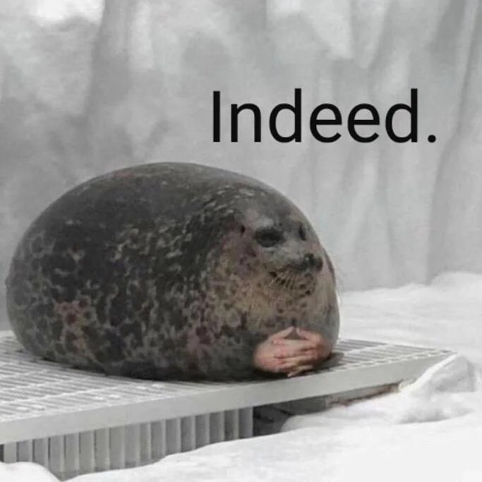

<!DOCTYPE html>
<html>
    <head>
        <meta charset="utf-8"  />
        <meta name="viewport" content="width=1280, user-scalable=no">
        <link rel="stylesheet" type="text/css" href="./style.css">
        <link rel="stylesheet" type="text/css" href="../../lib/css/animate.css">
    </head>
    <body>
        
        
        <h2 id="console"></h2>
        <div id="content">
            
            <!---->
            <!-- Fundo 
            <video name="fundo1" id="fundo1" style="left: -2px; position: absolute;" src="./media/vidoe.mp4" autoplay="autoplay" height="100px" width="200px" >
            </video>-->
            <!--<video id="fundo2" autoplay src="./media/fundo.mp4" autoplay left="97px" height="97px" width="97px" ></video>-->
            
            
        </div>
        <!-- Scripts -->
        <script src="../../lib/js/jquery-3.1.1.min.js"></script>
        <script src="../../lib/js/GnLib.js"></script>
        <script>
            var DURATION = 10000000;
            var comImagem = true;
            var ext;
            var possuiConteudo = true;
            
            //Dá o Ok sobre o carregamento com sucesso
            if (typeof (GnContentFound) != 'undefined') {
                GnContentFound();
            }
            
            // Autoplay Android
            if( navigator.userAgent.toLowerCase().indexOf("android") > -1) {
                    GnPlay();
                }

            function GnPlay() {
                $('#fundo1').get(0).play();
            }
            setTimeout(function(){
                $('#blackout').hide();
            }, 1000);
            
            if( window.location.href.indexOf("localhost/html5") > -1 ) {
                setTimeout(function() {
                    GnPlay();
                }, 1000);
            }
            //Envia pings ao player para manter a atividade
            setInterval(function() {
                if( typeof(parent.callApplication) != 'undefined' ) {
                    parent.callApplication({msg:"Youtube - PING"});
                }
            }, 60000);
        </script>
    </body>
</html>